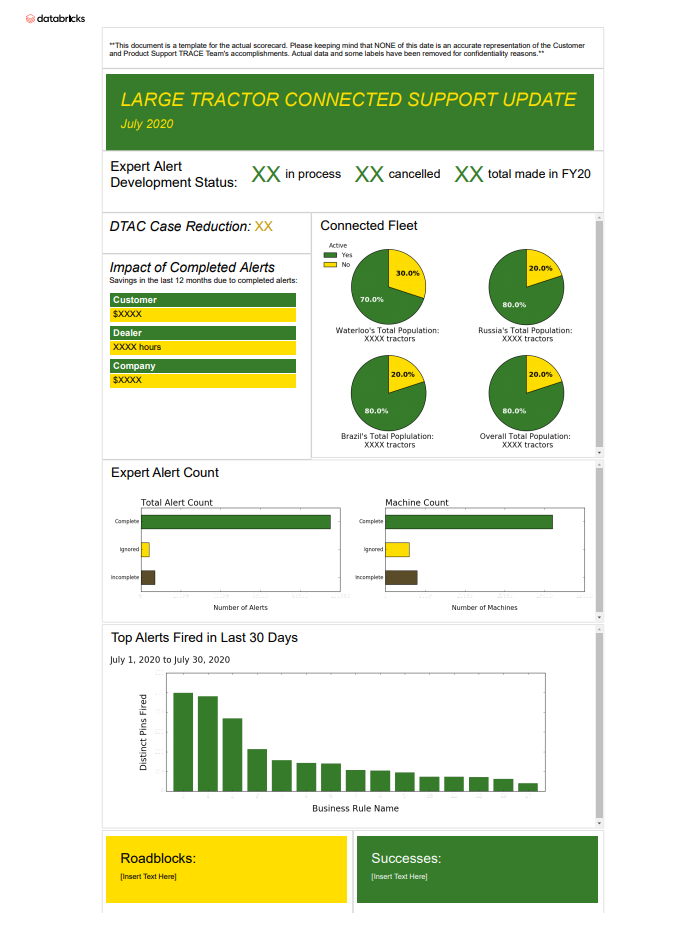

Customer and Product Support TRACE Team Scorecard
Skills: Implementation, Data Visualization
Tools: Databricks, HTML, CSS, Python, SQL, Microsoft Office PowerPoint
Problem:
The team wanted a document to formulate and visualize data about their monthly accomplishments into infographics, which they would send to employees in other departments. However, they wanted the data to automatically formulate and visualize itself because they did not want to spend a lot of time every month updating their scorecard.
Step 1: Brainstorm design ideas.
Based on my manager’s (the stakeholder’s) criteria for this project, low-fidelity design ideas were created for potential scorecard designs. I received feedback from my manager on the sketch ideas and improved the designs based on the feedback.
Step 2: Complete iteration one.
The first iteration of the scorecard was built in Microsoft Office PowerPoint. In this draft, the scorecard included very little automation. Code automatically calculated the data, but someone needed to manually input the data into the scorecard and update the graphics. Overall, updating the solution proved very time consuming, and the team didn’t want to commit the required time, meaning I needed to create a new idea for the scorecard.
Step 3: Create a new design based on stakeholder feedback.
Using feedback and discoveries from the first iteration, a second iteration of the design was completed that included coding to automatically create the scorecard. My code grabbed data from Databricks, the team’s data storage system, and turned it into visualizations that formed the scorecard. Then, only a few items needed to be manually entered into the scorecard, such as dates and recent team successes. For the code to form visualizations, first, SQL programs automatically gathered and calculated the data. Second, Python’s MatPlotlib code formulated most of the data into charts. Finally, HTML and CSS formatted the rest of the data. I taught myself how to code using SQL, MatPlotlib, and advanced aspects of HTML and CSS for this project.
Results:
The scorecard exceeded my manager’s original expectations because so much more of it was automated than expected, making the entire TRACE team excited to use it. Since I found an innovative way of using their current system, Databricks, my scorecard was featured in Databricks’s September newsletter.